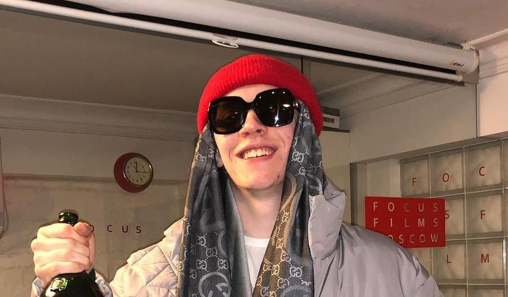

Big Baby Tape — российский рэпер и автор песен. Создатель и негласный лидер музыкального объединения Benzo Gang. Выступает также под псевдонимами DJ Tape и альтер эго Tape LaFlare. Является исполнителем и по совместительству A&R лейбла Warner Music Russia

Возраст: января 2000 Место рождения: Москва Жанры: Хип-хоп трэп Годы активности: 2015 - н. в. |
|---|
Hoodrich Tales — Dragonborn